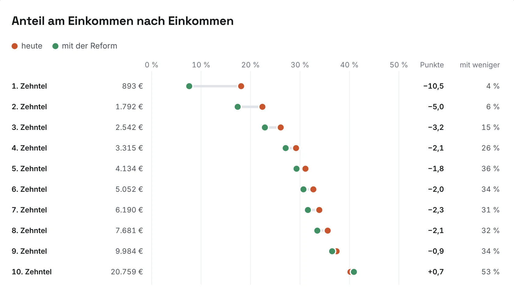
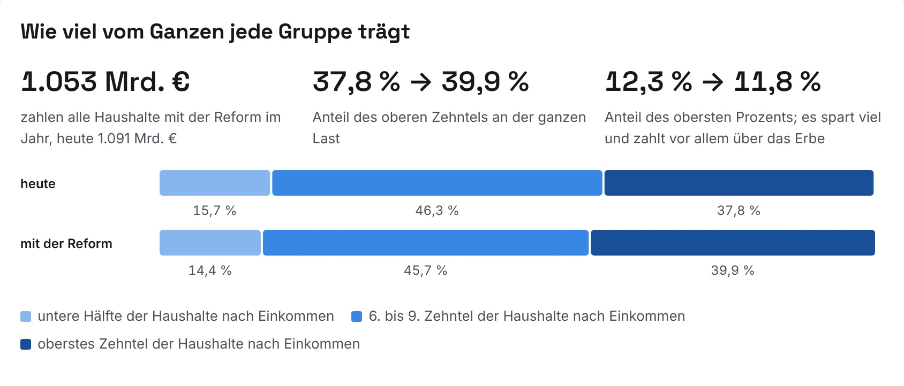
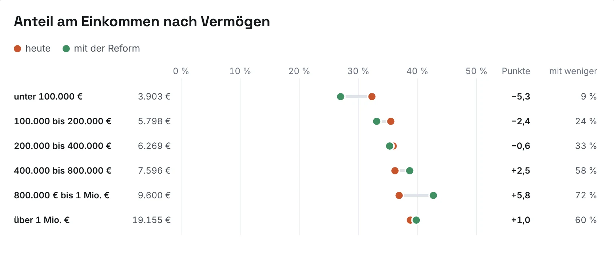
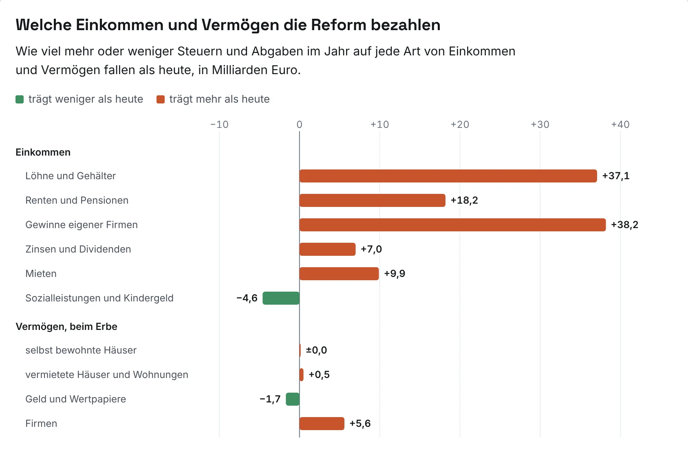
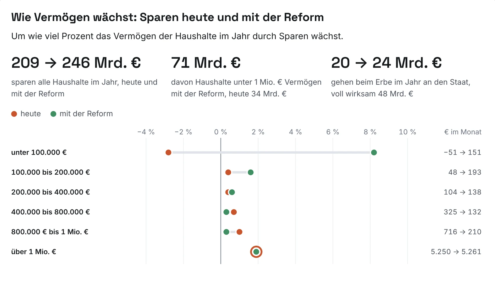

Ein einheitliches Steuersystem
Wer die Reform bezahlt
Jedes Einkommen nach denselben Regeln: Wer hat mehr Geld als heute, wer weniger? Gerechnet für alle 41 Mio. Haushalte, nach Einkommen und nach Vermögen, im ersten Jahr der Reform und bei gleichem Einkauf wie heute.











Wie gerechnet wurde
Rund 49.000 künstliche Haushalte stehen für alle 41 Mio. Haushalte in Deutschland. Sie sind auf amtliche Zahlen geeicht: Löhne und Konsum aus der Volkswirtschaftlichen Gesamtrechnung 2025, Lohn- und Einkommensteuer aus den Steuereinnahmen 2025, Vermögen aus der Vermögensbefragung der Bundesbank 2023 mit einer Zuschätzung der Reichsten, Sparen aus der Einkommens- und Verbrauchsstichprobe.
Heute: Lohn- und Einkommensteuer mit Soli, Sozialbeiträge, Abgeltungsteuer, Körperschaftsteuer auf eigene Firmen, Mehrwertsteuer, Erbschaft- und Schenkungsteuer. Mit der Reform: Ausgabensteuer über dem Freibetrag, höhere Mehrwertsteuer auf denselben Einkauf, die verbleibenden Beiträge und der Staatsanteil am Erbe, abzüglich der Auszahlungen an die Haushalte. Das Erbe zählt als erwartete Steuer im Jahr. Wie jede Schätzung hängt das Ergebnis an Annahmen: Im gezeigten Fall haben 11,1 Mio. Haushalte weniger als heute, mit anderen vertretbaren Eichungen sind es 9,7 bis 15,1 Mio. Jeden einzelnen Haushalt rechnet der Steuerrechner nach, die ganze Rechnung steht im Buch.